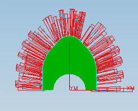
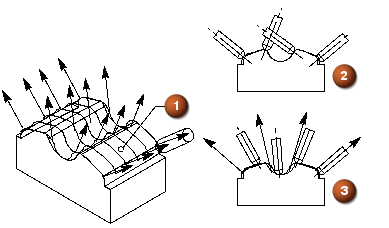

预计完成这堂课需要：12–19 分钟
插补矢量选项让您可以添加、删除以及编辑在驱动几何体上从指定点延伸的刀轴矢量，以控制刀轴。使用这个选项来防止由复杂的驱动或部件几何体引起的刀轴过度变化，不需要额外的刀轴控制几何体，比如点、线、矢量或者更光顺的驱动曲面。

这个控制刀轴的功能在加工比如叶轮、叶片以及叶盘之类的部件时特别重要，这些部件对刀轴装配的移动空间有限制。

驱动曲面
垂直于驱动曲面刀轴
插补的刀轴
可以定义尽可能多的矢量来创建光顺的刀轴移动，指定的矢量越多，对刀轴的控制就越多。